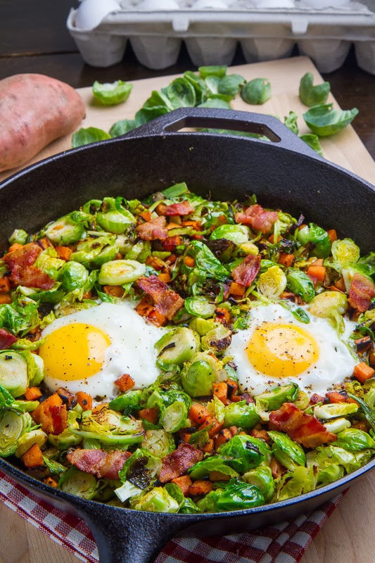

Sprout Hash

Description
A simple easy breakfast recipe.
The much maligned brussel sprout comes to life when paired with mushrooms and eggs in this one pan hash.
Ingredients
- Brussel sprouts
- Mushrooms
- Garlic
- Two eggs
Steps
- Halve sprouts and discard thick outer skin
- Chop mushrooms into half and then half again and chop garlic
- Add sprouts to pan with hot oil
- When sprouts are browned on one side turn and add mushrooms with a knob of butter
- Stir in garlic
- Make two spaces in the pan for eggs and crack eggs into them being careful not to break yolk
- Cover with lid or baking paper until eggs are cooked through
- Serve